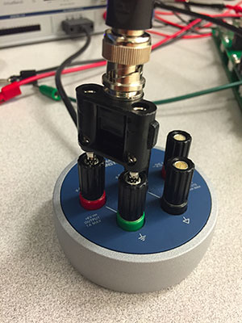

ELEC 243 Lab
Experiment 1.2
The Oscilloscope and Function Generator
Equipment
- BNC Patch Cords
So far we've measured only constant (or nearly constant) voltages and currents. A much more interesting class of signals are time varying voltages and currents. For a slowly time varying signal, we could just write down the values as they change (as we did in plotting the light bulb I-V curve), but for most time varying signals we need something a bit faster. On the VirtualBench, that would be the oscilloscope.
In order to measure time varying signals, we need a source of time varying signals. The DC power supply on the VirtualBench is our source of constant voltages, and the function generator is our source for that class of time varying signals known as periodic signals.
Part A: Viewing Signals with the Oscilloscope
First get acquainted with the settings of the oscilloscope, even though
you will continue using many of them in their default setting. Make sure
you are being consistent in using either CH 1 or 2.
Note
Make sure the oscilloscope controls are as follows:
- Time/Div: 1ms
- Mode: Auto
- Display: CH 1
- Volts/Div: 2V
- AC-DC: DC
- Trigger: Edge; CH 1; Rising
Note
If everything is in order, you should see a red horizontal line through the middle of the screen.
-
Set up the function generator to produce a 1kHz sine wave (found to the right of the oscilloscope display). Turn on the power button for the function generator. Set it as follows:
- Frequency: 1.0 kHz
- Amplitude 3 Vpp (Volts, peak-to-peak)
- DC Offset: 0 V
- Duty Cycle (only used for square wave setting)
- Function: Sine wave
-
Connect the function generator's
OUTPUTto the oscilloscope'sCH 1input. The easiest way to do this is to connect one end of a BNC patch cord to the function generatorFGENand the other to the oscilloscopeCH -
This connects the generator's ground and signal terminals to the scope's ground and terminals. If all has gone well, you should see 6 full cycles of a sine wave in red.
-
Now examine the effect of each control:
-
Move the display with the positioning controls - click and drag the toolbar at the top.
-
Change the Time/Div and Volts/Div settings to see what effects are produced.
-
Click on the ruler in the bottom left of the screen and change the settings of the function generator to observe how the oscilloscope automatically measures signal features such as frequency, period, and amplitude.
-
Why do you think these numbers are slightly different from the function generator settings?
-
-
Examine the various waveforms produced by the function generator. Examine the effects of the
DUTY CYCLEandDC OFFSETcontrols. Before going on, be certain that you are comfortable with the oscilloscope and function generator. If you are having problems, ask your labbie for help.
Part B: Quantitative Measurements with the Oscilloscope
In addition to allowing us to view the "shape" of a signal, the oscilloscope can also measure voltage, amplitude, time intervals, and frequency.
-
Connect the oscilloscope
CH 2input to the \(0-6V\) output of the DC power supply. For this you can use a BNC patch cord and your BNC to banana plug adapter. -
Switch to
CH 2and under Channel Settings, set the vertical offset to 0. This effectively sets the reference to \(0\), known as "zeroing" the signal. -
Increase the voltage to \(2V\). Continue to increase the voltage and see how well the scope readings and power supply settings agree.
-
Why would we want to use the oscilloscope to measure a "DC" voltage?
-
Switch to
CH 1and "zero" Channel 1 as above. Set the function generator to produce a 2kHz sine wave. Set theTIME/DIVsetting to \(100 \mu s\). Measure the distance between two successive zero crossings of the same slope and multiply by the Time / Div factor to get the period of the waveform. Using the formula \(f=1/T\), determine the measured frequency of the signal. How does this compare with the nominal frequency?Note
There are several ways we can express the amplitude of a signal. For the sine wave \(y(t)=Asin(2πft)\) the amplitude A is equal to the distance from the positive (or negative) peaks of the waveform to the t-axis. This peak amplitude measurement is equally useful for any waveform which has equal positive and negative peaks.
Arbitrary waveforms may not have this property, so a more general measurement is the peak-to-peak amplitude, the distance between the positive and negative peaks of the signal.
Other measures of a signal's magnitude include average and rms, which we'll talk about later. Since in general these different measures have different values, it is a good idea always to specify which amplitude measurement you are using.
-
We can also use the oscilloscope to measure the amplitude of a signal. Disconnect your oscilloscope from the function generator and use a BNC clip lead to connect
CH 1to the square wave and ground outputs of the scope, located to the right of theCH 2input socket. -
Sketch this signal's waveform. What is its period? What is its frequency? Adjust the CH 1 Volts/Div switch so that the waveform nearly fills the screen vertically. Measure the peak-to-peak amplitude by counting the number of divisions between the upper and lower peaks and multiplying by the Volts/Div factor. Does your measurement of the waveform's amplitude correspond to the VB's measurement? (Click on the ruler button to look at the signal's measurements.)
-
Take a screenshot of the waveform by going to File \(\rightarrow\) Export Screenshot